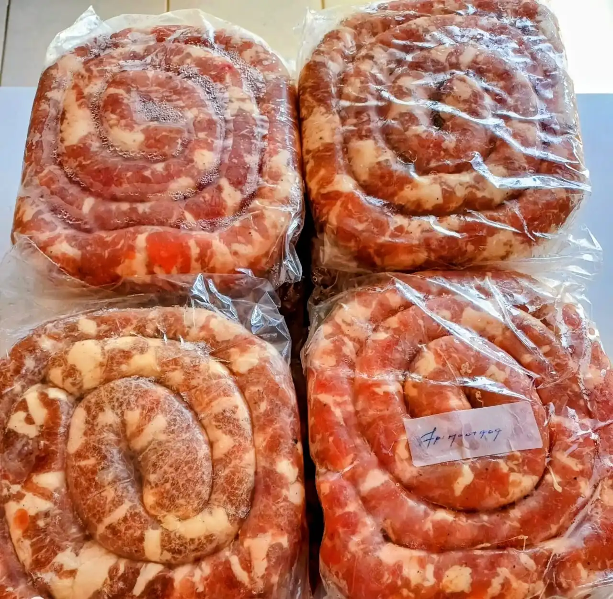
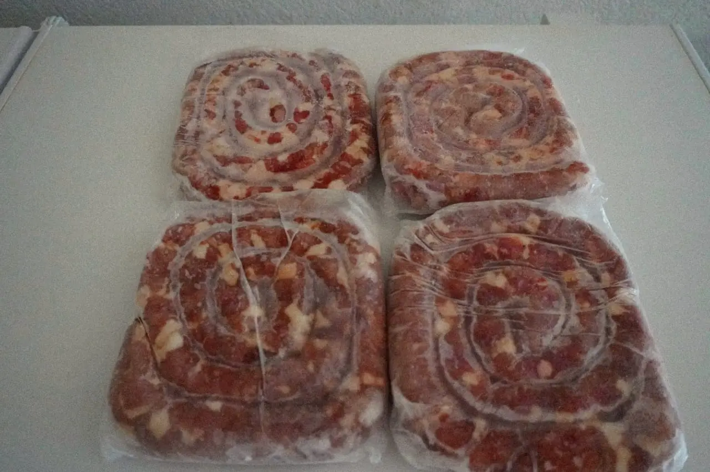
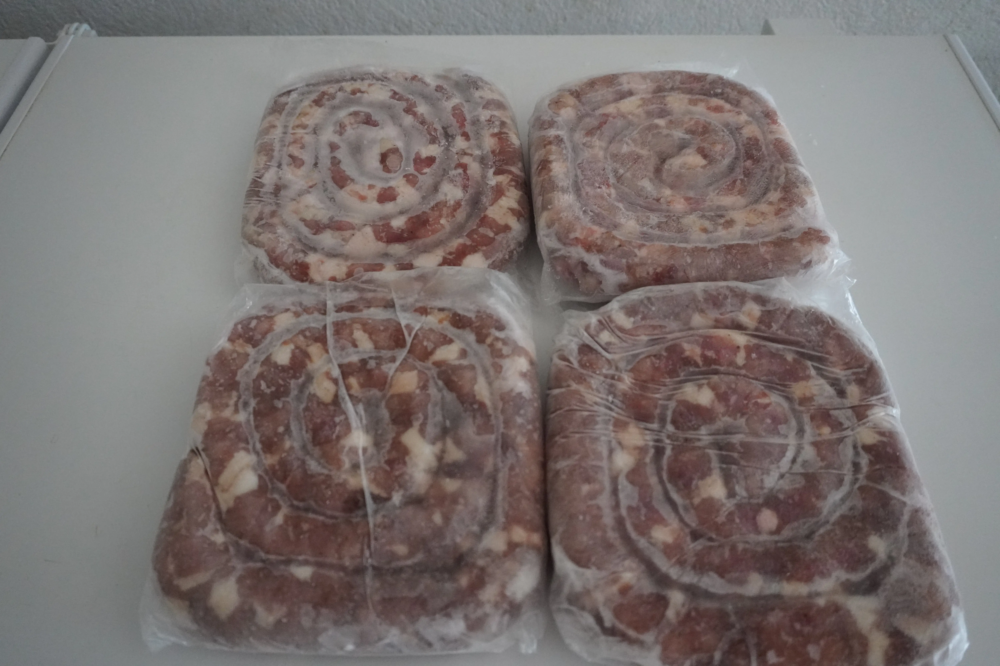
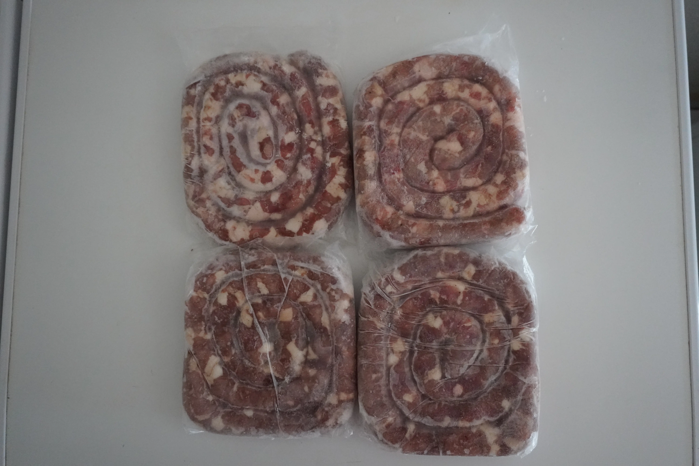

Linguiça de Porco Caseira
Produção própria — Tempero da roça
Escolha a Variante:
Retire na loja: R. Bom Jardim, 379 — Centro, Cáceres.
Linguiça de Porco Caseira: Herança da Tradição Caipira do Centro-Oeste
Nas fazendas do interior de Mato Grosso, a confecção da linguiça caseira sempre foi um evento coletivo — um rito que marcava o dia do abate do porco e reunia a família em torno da cozinha de lenha. Na Peixaria Rio Paraguai, em Cáceres-MT, essa tradição sobrevive em cada metro de linguiça que produzimos. Utilizamos exclusivamente carne de porco caipira criado solto, alimentado com ração natural sem hormônios de crescimento, abatido e processado de forma artesanal. É exatamente essa origem que separa a nossa linguiça de qualquer versão industrial encontrada nas prateleiras dos supermercados.
Ingredientes Puros: Carne, Tempero e Nada Mais
A receita de tempero da nossa linguiça é resultado de anos de aperfeiçoamento e guarda os segredos simples que fazem toda a diferença: alho fresco amassado na hora, sal marinho na proporção exata, pimenta-do-reino moída na hora e ervas selecionadas. A mistura é incorporada à carne picada grosseiramente — nunca moída em excesso, para preservar a textura —, descansando por pelo menos 12 horas antes do enchouriçamento para que os sabores se aprofundem. O tripa natural garante aquela crocância característica da linguiça boa ao primeiro contato com a brasa.
Diferente das linguiças industriais, que listam em seus rótulos estabilizantes, eritorbato de sódio, corantes e excesso de gordura de baixa qualidade, a nossa contém apenas: carne suína, gordura natural do próprio porco, alho, sal e temperos. Sem conservantes artificiais. Sem extensores de proteína. Sem surpresas.
Dois Tipos para Cada Ocasião
- Linguiça Tradicional: Temperada no clássico, com alho, sal e pimenta-do-reino. Sabor equilibrado que agrada todos os paladares, desde as crianças até os mais exigentes. Perfeita para churrascos, feijão tropeiro e marmitas caprichadas do cotidiano.
- Linguiça Apimentada: Leva a mesma base da tradicional acrescida de pimentas cumari e malagueta cultivadas artesanalmente, que entregam um ardume presente no paladar mas sem exagero — um calor que complementa o sabor da carne sem mascarar nada.
Dicas de Preparo para Aproveitar ao Máximo
A linguiça caseira pede cuidado no preparo. Na brasa, use fogo médio para derreter a gordura interna aos poucos — pressa resulta em casca queimada e interior ainda cru. Na frigideira, adicione um fio de azeite e grelhe em fogo médio-alto, virando uma vez. No forno, fure levemente a tripa com um garfo para evitar que estoure e asse a 200°C por 25 minutos. Qualquer que seja o método, o resultado é uma linguiça de sabor profundo, suculenta e com aquele aroma de roça que só a carne caipira proporciona. Encomende pelo WhatsApp e retire fresca na loja em Cáceres, no Centro.